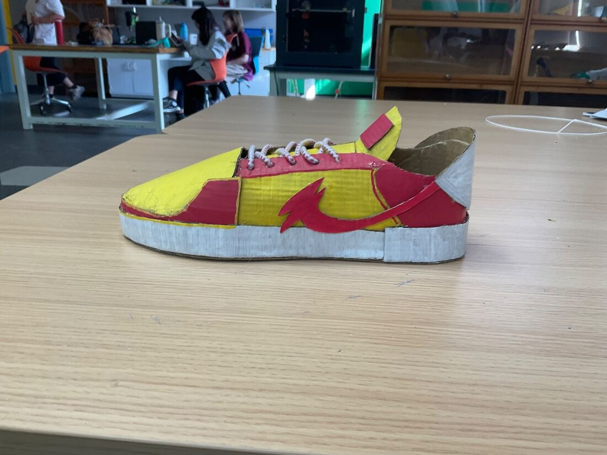
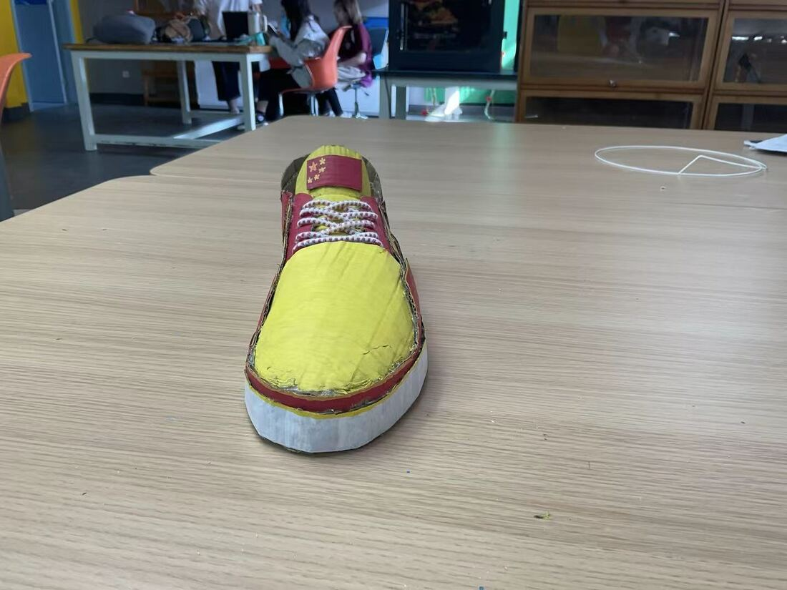
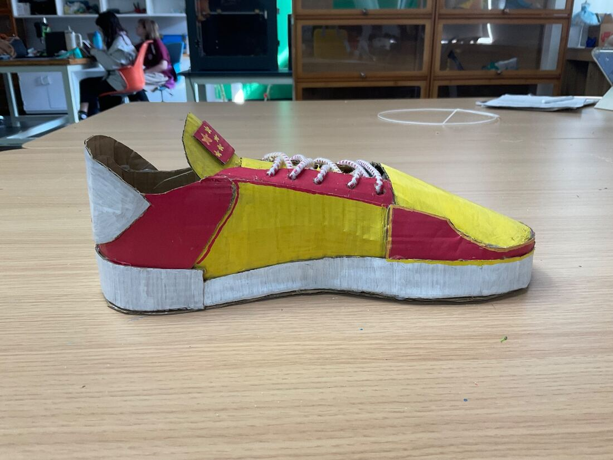
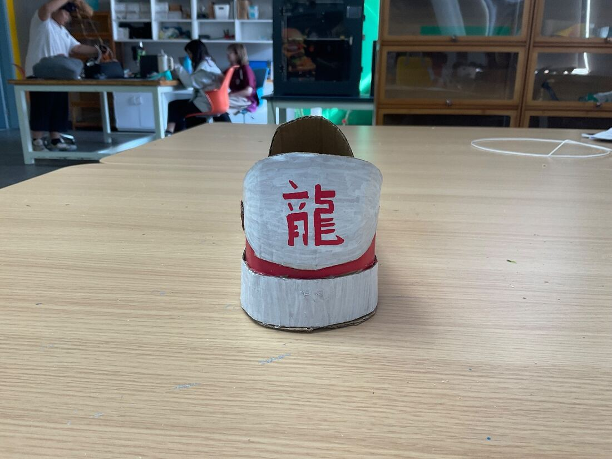

The yellow upper
Lemon yellow covers the toe cap and the midfoot. It is the colour you notice from across a room, and it gives every red detail something bright to sit against.
Rooted in tradition. Built to outrun expectations.
A hand-built sneaker in lemon yellow and crimson, shaped around movement and finished by hand. Light on the eye, loud on the street.
Designed to stand out. Crafted for comfort. Inspired by the East.
Lemon yellow covers the toe cap and the midfoot. It is the colour you notice from across a room, and it gives every red detail something bright to sit against.
A red tail sweeps forward from the heel and ends in a flame-shaped head with three points. Together with the red heel and toe panels, it makes the shoe look like it is moving even when it stands still.
A thick white sole wraps the whole shoe, with a separate wrapped heel block. It calms the strong colours above. Everyday comfort is the design intention; the sole has not been lab tested.
White cord laces flecked with red run through five pairs of punched eyelets in a red eyestay band, finished in tall, loose loops.
A grey-white heel counter carries the character 龍 (lóng, dragon), painted in red above a red band. From behind, the shoe signs its own name.
The original was built by hand from layered card: cut, glued and painted. Visible flutes, raw cut edges and brush marks are part of its character, and the 3D model keeps them.
Speed is the idea this shoe was drawn around: a tail that leans forward, a pointed flame, colours that flash as they pass. It has not been performance tested, so there are no numbers here and no promise that it makes anyone faster. It is designed to look like it is already on its way.
Drag to rotate, pinch or scroll to zoom, and tap the red markers for details. Use the buttons for exact views, or reset to the opening angle.
Six markers sit on the shoe. Some only appear when their side faces you.
This shoe is a 3D model built in code from the four reference photographs below. It is not a 3D scan: proportions, the sole profile and panel outlines are close approximations. Colours were matched to the photos after correcting the classroom lighting.
Every panel on the 3D shoe was traced from these photographs of the handmade prototype: painted card over a card sole, real cord laces, and a red 龍 on the heel. Nothing was recoloured.



Xiángyún cloud scrolls appear on palace eaves, robes and porcelain. Here they drift behind the shoe and gather around it at the end, the way clouds were drawn to frame something important.
Shuǐmò ink painting suggests mountains and wind with a few strokes. The brush lines and speed trails on this page borrow that economy: one gesture to show movement.
A red seal is how a Chinese artist signs a work. Ours reads 龍行, from the idiom 龍行虎步: to walk like a dragon and stride like a tiger, meaning a bold, assured bearing.
Tradition is not stillness. It is movement carried forward.